Chapter 4 새로운 변수 생성
4.1 기존 변수의 값 바꾸기
이번 장에서는 SAS에서 새로운 변수를 어떻게 생성하는지 알아보자. 새로운 변수 생성 시 두 가지 경우를 생각해 볼 수 있다. 첫 번째는 기존에 존재하는 변수의 값을 바꾸는 것이고 두 번째는 완전히 새로운 변수를 생성하는 경우이다. 우선 기존에 존재하는 변수의 값을 바꾸는 여러 가지 형태를 알아보자. 사용법은 다음과 같다.
DATA 라이브러리.데이터셋명;
SET 라이브러리.기존데이터셋명;
기존에 존재하는 변수 = 원하는 형태의 식;
RUN;명령문에서 “=”을 기준으로 왼쪽에는 새로운 값을 가질 변수 이름을 지정하고 오른쪽에는 새로운 값을 생성하는 명령문을 작성한다. 새로운 값을 생성하는 명령문에는 단순히 숫자나 문자 값을 지정해도 되고 기존에 존재하는 변수를 이용한 수식 형태도 가능하며, 자기 자신의 값을 이용해도 무방하다. 다음과 같은 프로그램을 살펴보자.
data bb.t20_new;
set bb.t20 (obs=10);
keep rn_indi ed_rc_tot_amt -- edc_insur_brdn_amt;
rename rn_indi=id ed_rc_tot_amt=tcost edc_sba=acost edc_insur_brdn_amt=bcost;
run;
proc print data=bb.t20_new; run;
data bb.t20_new;
set bb.t20_new;
tcost = tcost + 1000;
acost=acost+bcost+1000;
run;
proc print data=bb.t20_new; run;우선 BB.T20 데이터셋에서 개인고유번호(RN_INDI), 심결요양급여비용총액(ED_RC_TOT_AMT), 심결본인부담금(EDC_SBA), 심결보험자부담금(EDC_INSUR_BRDN_AMT) 네 개의 변수만 남겨서 BB.T20_NEW 데이터셋을 생성한다. 여기서 ED_RC_TOT_AMT — EDC_INSUR_BRDN_AMT의 의미는 데이터셋 상의 변수 순서로 봤을 때 ED_RC_TOT_AMT부터 EDC_INSUR_BRDN_AMT까지 모든 변수를 의미한다. 이때 편의를 위해 남겨진 변수의 이름을 ID, TCOST, ACOST, BCOST로 변경했으며, TCOST는 ACOST와 BCOST의 합과 같은 관계를 지닌다.
다음으로 BB.T20_NEW 데이터셋을 참조하여 BB.T20_NEW 데이터셋으로 덧 씌우며, 이때 TCOST와 ACOST의 값을 바꾸기 위해 두 줄의 명령문을 추가하였다. 우선 [TCOST=TCOST+1000;]의 경우, 원래 가지고 있던 TCOST의 값에 1000을 더하여 다시 TCOST에 저장을 한다. 즉, 기존의 TCOST 값은 사라지고 원래 TCOST 값보다 1000씩 커진 값을 가진 새로운 TCOST가 생성된다. [ACOST=ACOST+BCOST+1000;]은 원래 가지고 있는 ACOST와 BCOST를 더하고 여기에 다시 1000을 더한 값을 ACOST에 저장하라는 의미이다. 기본적으로 ACOST와 BCOST를 합하면 TCOST와 같아지게 되고 여기에 1000을 더하여 ACOST에 저장을 하였기 때문에, 결론적으로 새로 생성된 ACOST는 새로 생성된 TCOST와 같은 값을 가지게 된다.
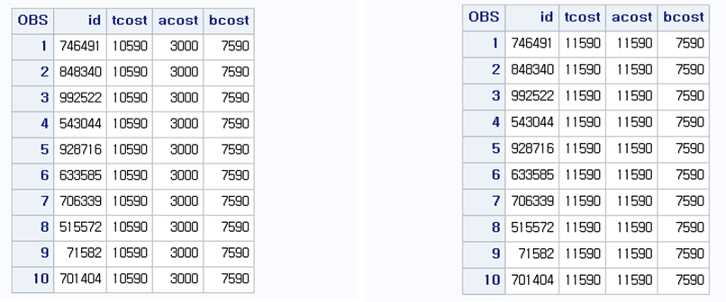
결과를 살펴보면 TCOST는 기존의 값에 1000을 더한 값이 저장되었고, ACOST는 기존의 ACOST 값에 BCOST와 1000을 더한 값이 생성되었다는 것을 알 수 있다. 기존에 존재하는 변수명으로 새로운 값을 부여하게 되면 기존의 값이 사라지게 되므로 기존 변수의 값을 바꿀 때에는 신중히 처리해야 한다.
4.2 새로운 변수 만들기
SAS에서 새로운 변수를 생성하는 방법은 기존 변수의 값을 바꾸는 방법과 다르지 않다. 다만, “=”을 기준으로 왼쪽에 새로운 값을 가질 변수명 대신 새로운 변수명을 입력하면 된다. 사용하는 방법은 다음과 같다.
DATA 라이브러리.데이터셋명;
SET 라이브러리.기존데이터셋명;
새로운 변수 = 원하는 형태의 식;
RUN;우선 기본적인 사칙연산을 이용한 새로운 변수 생성 방법을 알아보자. 기존 변수의 값 바꾸기와 같이 BB.T20 데이터셋에서 개인고유번호(RN_INDI), 심결요양급여비용총액(ED_RC_TOT_AMT), 심결본인부담금(EDC_SBA), 심결보험자부담금(EDC_INSUR_BRDN_AMT) 네 개의 변수만 남겨서 BB.T20_NEW2 데이터셋을 생성한다. 여기서 ACOST와 BCOST를 합해서 새로운 변수 TOTALCOST를 생성하고 ACOST와 BCOST의 비율을 COSTRATIO 변수로 생성해보자. 프로그램은 다음과 같다.
data bb.t20_new2;
set bb.t20 (obs=10);
keep rn_indi ed_rc_tot_amt -- edc_insur_brdn_amt;
rename rn_indi=id ed_rc_tot_amt=tcost edc_sba=acost edc_insur_brdn_amt=bcost;
run;
proc print data=bb.t20_new2; run;
data bb.t20_new2;
set bb.t20_new2;
totalcost = acost+bcost;
costratio = acost/bcost;
run;
proc print data=bb.t20_new2; run;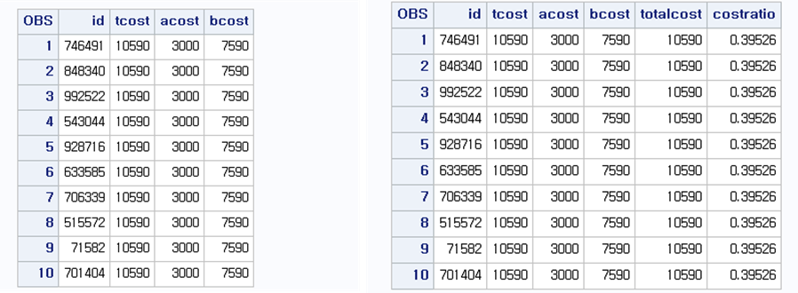 SAS는 사용자 편의를 위해 여러 가지 함수를 제공한다. 예를 들어 변수의 합을 구하는 함수는 “SUM”을 이용하고 평균을 구할 때는 “MEAN”을 이용한다. 이처럼 내장된 함수를 이용하여 간단하게 여러 가지 형태의 식을 구현할 수 있다. SAS에서 제공하는 내장함수 중 수학 또는 통계와 관련된 내장함수는 다음과 같다.
※ 수학 계산 관련 함수
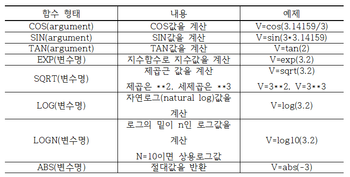
※ 통계 계산 관련 함수
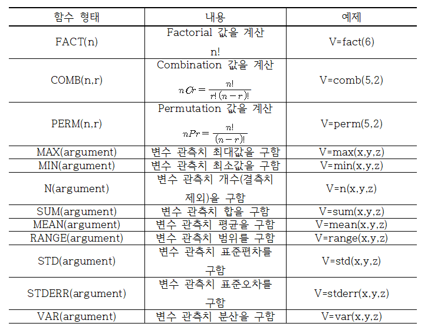
가장 많이 이용하는 SUM과 MEAN의 사용법은 다음과 같다.
새로운 변수1 = SUM(변수명1, 변수명2, ...);
새로운 변수2 = MEAN(변수명1, 변수명2, ...);여기서 함수 뒤의 괄호 안에 변수들은 “,”로 구분되며 변수명1, 변수명2, … 자리에는 기존의 변수가 아니라 지정된 숫자를 사용해도 무방하다. SAS는 이 외에도 많은 함수를 제공하고 있으며, 추가적인 사항은 APPENDIX에 제공한다.
위의 예제에 이어서 내장함수를 이용하여 다음과 같은 변수를 생성해보자. * TOTALCOST2 = ACOST와 BCOST의 합 * MEANCOST = ACOST와 BCOST의 평균 프로그램은 다음과 같다.
data bb.t20_new2;
set bb.t20_new2;
totalcost2 = sum(acost, bcost);
meancost = mean(acost, bcost);
run;
proc print data=bb.t20_new2; run;
SAS에서 사칙연산 또는 내장함수를 이용할 때 결측값(missing value)은 주의해서 처리해야 한다. 예를 들어 ACOST와 BCOST의 합을 구할 때, 만약 ACOST에 결측값이 존재한다면 사칙연산 결과는 결측값으로 나온다. 즉, 사칙연산은 결측값이 하나라도 존재한다면 연산이 되지 않고 결측으로 처리를 하게 된다. 반면, 내장함수 SUM을 이용하여 합을 구하게 되면 결측값은 없는 값으로 처리하고 존재하는 값으로 연산을 하게 된다. 다시 말해서 ACOST값이 결측이고 BCOST에 값이 존재한다면 SUM(ACOST, BCOST) 값은 결측이 없는 BCOST 값을 반환하게 된다.
4.3 ROUND 함수를 이용한 새로운 변수 만들기
주어진 값을 반올림해야 하는 경우 사용하는 함수는 ROUND이다. ROUND 사용법은 다음과 같다.
새로운 변수 = ROUND(변수명, 반올림 숫자);SAS에서 ROUND 함수를 적용하는 방법은 지정된 반올림 숫자를 기준으로
① (반올림숫자 ± 반올림숫자/2) : 사이에 있으면 반올림 숫자
② (반올림숫자 - 반올림숫자/2) : 작은 경우 버림
③ (반올림숫자 + 반올림숫자/2) : 크면 반올림을 하게 된다. 예를 들어 10의 자리에서 반올림하기 위해 반올림 숫자로 50을 지정하게 되면 마지막 두 자리의 수가 25에서 75 사이이면 지정된 숫자인 50의 값을 반환하고 두 자리의 숫자가 25 미만이면 버림을 하게 된다. 또한, 두 자리의 숫자가 75 이상이면 반올림 값을 반환한다. 일반적인 반올림법을 사용하고 싶으면 반올림 숫자를 0.1, 1, 10, 100과 같이 10의 배수로 지정하면 된다.
data bb.t20_round;
set bb.t20 (obs=10);
keep rn_indi ed_rc_tot_amt -- edc_insur_brdn_amt;
rename rn_indi=id ed_rc_tot_amt=tcost edc_sba=acost edc_insur_brdn_amt=bcost;
run;
data bb.t20_round;
set bb.t20_round;
roundbcost = round(bcost,50);
roundtotal = round(acost+bcost,100);
sumcost = sum(acost, roundbcost);
propcost = round(acost/tcost*100,0.1);
run;
proc print data=bb.t20_round; run;
위의 프로그램은 50을 기준으로 반올림을 적용하여 ROUNDBCOST 변수를 생성하고, ROUNDTOTAL 변수는 ACOST와 BCOST의 합을 10의 자리에서 반올림한 경우이다. ROUNDTOTAL의 경우 ROUND 함수 안에 변수의 합을 구하는 형식으로 되어있으며, 사칙연산뿐만 아니라 다른 함수도 중첩해서 사용할 수 있다. SUMCOST는 바로 위의 명령문에서 구해진 ROUNDCOST와 ACOST의 합으로 이루어지며 PROPCOST는 소수 둘째 자리에서 반올림을 한다.
4.4 숫자 변수를 문자 변수로, 문자 변수를 숫자 변수로
데이터를 분석하다 보면 숫자를 문자로 변환하거나, 문자 변수로 읽혀진 숫자를 다시 숫자 변수로 변환해야 하는 경우가 빈번히 일어난다. 먼저, 숫자형 변수를 문자형 변수로 변환할 때 사용하는 함수는 PUT이며 사용법은 다음과 같다.
새로운 변수 = PUT(숫자 변수명, 자리수.);PUT 함수는 PUT(숫자 변수, 자리수.)로 사용하며, 이때 자료의 정렬 상태는 데이터셋 상에서는 오른쪽 정렬을 그대로 유지하며 출력상태에서는 왼쪽 정렬을 유지한다. 여기서 자리수는 자료의 최대 길이를 의미한다. PUT 함수 이외에도 숫자형 변수를 문자형 변수로 변경 가능한 함수로 COMPRESS와 LEFT가 있다. COMPRESS 함수는 문자값의 공백 또는 특정 내용을 삭제하는 함수이며 사용법은 COMPRESS(문자형 변수, ‘삭제할 내용’)이다. 이때 ‘삭제할 내용’을 따로 지정하지 않으면 공백 부분을 삭제한다. 따라서 COMPRESS는 오른쪽 정렬인 숫자형 변수의 왼쪽 공백을 삭제함으로써 왼쪽 정렬로 바꾸어 문자형 변수로 변환을 한다. 반면 LEFT 함수는 숫자형 변수를 직접적으로 왼쪽 정렬시킴으로써 문자형 변수로 전환한다. 이때 자료의 자리수는 숫자형 변수에 지정된 자리수를 그대로 지정한다. BB.T60 자료에서 관측값을 10개만 남기고 금액(AMT) 변수만 남겨서 BB.T60_CHAR 데이터셋을 생성하고, 위에 언급한 PUT, COMPRESS, LEFT 함수를 적용하여 AMT 변수를 문자형 변수로 변환시켜 보자. 프로그램은 다음과 같다.
data bb.t60_char;
set bb.t60 (obs=10 keep=amt);
amt_p = put(amt, 6.);
amt_c = compress(amt);
amt_l = left(amt);
run;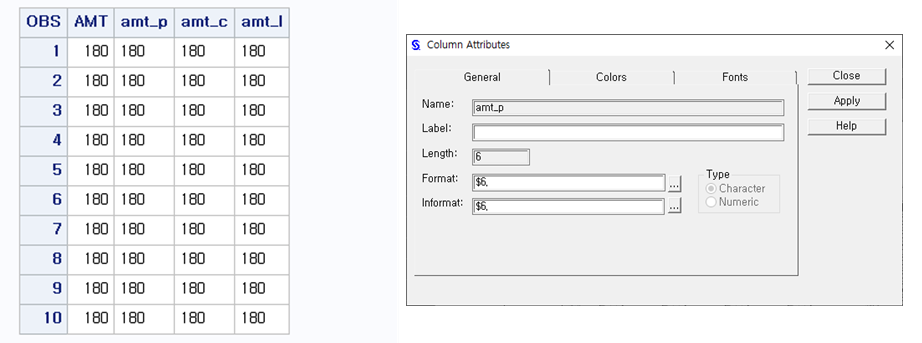
AMT 변수는 오른쪽 정렬, AMT_P, AMT_C, AMT_L은 왼쪽 정렬되어 있음을 알 수 있다. AMT_P 변수 특성창을 살펴보면, 길이(length)는 6으로 지정되었고 FORMAT 형식이 $6.으로 되어있다. TYPE은 Character로 표시되어 문자형으로 변경되었음을 알 수 있다.
다음으로 문자형 변수를 숫자형 변수로 변경할 때 사용하는 함수는 INPUT이며 사용법은 다음과 같다.
새로운 변수 = INPUT(문자 변수명, 자리수.);INPUT 함수는 PUT 함수와 마찬가지로 INPUT(문자 변수, 자리수.)로 사용한다. 이외에도 아주 간단하게 사칙연산 중 “*”와 “/”를 통해서도 변경할 수 있다. BB.T60_CHAR 데이터셋에서 문자형으로 바꾸어진 변수 AMT_P, AMT_C, AMT_L를 다시 숫자형으로 바꾸어보자. 프로그램은 다음과 같다.
data bb.t60_char; set bb.t60_char;
amt_pr = amt_p*1;
amt_cr = amt_c/1;
amt_lr = input(amt_l, 8.);
run;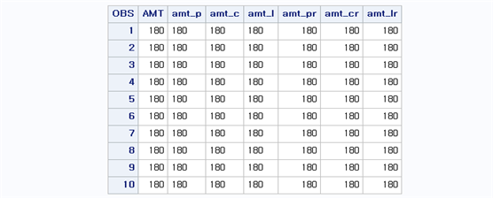
4.5 Substr 함수를 이용한 새로운 변수 만들기
문자 변수가 가지는 값에서 특정한 위치의 값을 추출할 때 SUBSTR 함수를 이용하며 사용법은 다음과 같다.
새로운 변수 = SUBSTR(문자 변수, 추출시작 자릿수, 원하는 개수);SUBSTR 함수의 사용 방법은 SUBSTR(변수, 추출 시작할 위치, 뽑길 원하는 개수)이다. 예를 들어 변수 A가 ‘ABCD1234’ 값을 가지고 있다고 할 때, 처음부터 3개의 값을 뽑으면 ‘ABC’가 되고 이때 함수는 [A3 = SUBSTR(A,1,3);]와 같은 형태로 작성하면 된다. 만약 4번째부터 2개의 값만 뽑고 싶으면 [A4 = SUBSTR(A,4,2);]와 같은 형태로 작성하면 되고 이때 결과는 ‘D1’이 될 것이다.
BB.T40 데이터셋에서 데이터 개체수는 10, 변수는 요양급여상병기호(MCEX_SICK_SYM)만 남겨서 BB.T40_SUBSTR 데이터셋을 생성하고, 이때 SUBSTR 함수를 이용하여 처음부터 3자리 값만 뽑아서 SICK3 변수를 만들어 보도록 하자. 프로그램은 다음과 같다.
data bb.t40_substr;
set bb.t40 (obs=10 keep=mcex_sick_sym);
sick3 = substr(mcex_sick_sym,1,3);
run;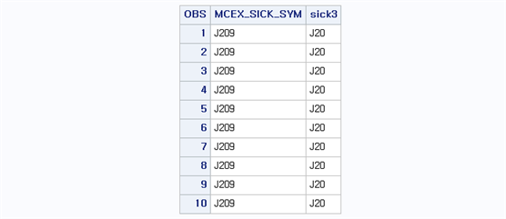
4.6 날짜 함수를 이용한 새로운 변수 만들기
SAS 시스템은 1960년 1월 1일을 기준(0)으로 두고 숫자값으로 날짜를 저장한다. 예를 들어 1960년 1월 1일은 0, 1월 2일은 1, 1월 3일은 2와 같이 숫자로 부여하여 날짜를 인식한다. 이 장에서는 날짜 변수를 이용한 여러 특성을 살펴본다.
4.6.1 날짜 변수의 생성
날짜 값이 문자 변수로 되어있는 경우 INPUT 함수를 이용하여 날짜 변수로 변환할 수 있으며 사용법은 다음과 같다.
새로운 변수 = INPUT(문자 변수, 날짜 형식);INPUT에서 날짜 형식은 날짜를 담고 있는 문자 변수의 값에 따라 결정된다. 예를 들어 날짜 값이 ‘20020806’ 이라면 날짜 형식에 yymmdd8. 이라는 값을 지정한다. 여기서 yy는 년(year), mm은 월(month), dd는 일(day)을 의미하며 8.은 연월일순서로 8자리로 구성된 값을 의미한다. 날짜 형식은 FORMAT 구문에서 어떻게 출력할지 지정할 수 있으며 날짜 형식에 지정된 양식은 다음과 같다.
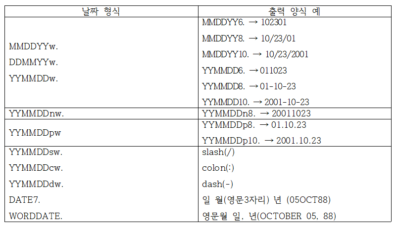
두 번째로 날짜 변수를 생성하는 방법은 MDY 함수를 이용하는 것이며 사용 방법은 다음과 같다.
새로운 변수 = MDY(월, 일, 년);BB.T20 데이터셋에서 요양개시일자(MDCARE_STRT_DT) 변수만 남겨서(10개의 개체만 남김) 새로운 날짜 변수를 생성해보자. 여기서는 INPUT을 이용한 방법, MDY를 이용한 방법을 이용하여 각각 DATE1, DATE2 변수를 생성하여 BB.T20_DATE 데이터셋을 생성시켜보자. 프로그램은 다음과 같다.
data bb.t20_date;
set bb.t20 (obs=10 keep=mdcare_strt_dt);
date1 = input(mdcare_strt_dt,yymmdd8.);
date2 = mdy(
substr(mdcare_strt_dt,5,2),
substr(mdcare_strt_dt,7,2),
substr(mdcare_strt_dt,1,4));
date3 = date2;
run;
proc print data=bb.t20_date; format date3 mmddyy10.; run;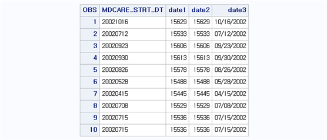
결과를 살펴보면, DATE1과 DATE2의 값이 같게 나타남을 알 수 있다. 여기서 DATE2를 생성시키기 위해 MDY 함수 안에 SUBSTR 함수를 중첩시켜 월/일/년 값을 추출했음을 알 수 있다. DATE3은 출력 시 FORMAT 형식을 지정해 날짜 변수를 보기 쉽게 바꿀 수 있음을 보여주기 위해 DATE2 변수를 복사해서 생성시켰다. 즉, [DATE3 = DATE2;]를 하게 되면 DATE3라는 변수를 생성 할 때 DATE2 값만 이용하므로 결국 DATE3=DATE2 관계가 성립하게 된다. 첫 번째 값을 살펴보면 요양개시일자(MDCARE_STRT_DT) 값이 ‘20021016’으로 문자 값으로 입력된 것을 알 수 있다. 이를 날짜 변수로 바꾸면 1960년 1월 1일을 기준으로 15629번째 날로 SAS가 인식한다는 것을 알 수 있다. 동일한 값을 FORMAT에서 mmddyy10. 옵션을 주면 10/16/2002로 출력된다.
4.6.2 날짜 계산
SAS에서 날짜 변수는 숫자 변수로 인식되기 때문에 사칙연산뿐만 아니라 연산 함수를 적용하는 것이 가능하다. 또한, 여러 내장함수를 제공하여 날짜와 관련된 연산을 쉽게 할 수 있다.
※ 오늘 일자와 관련된 함수
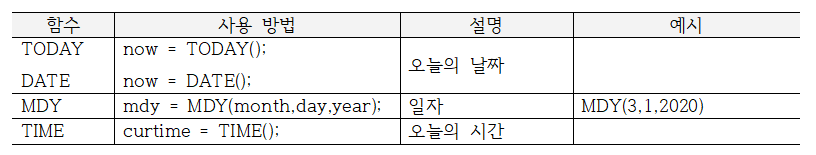
※ 월, 분기, 일자와 연도를 알기 위한 함수
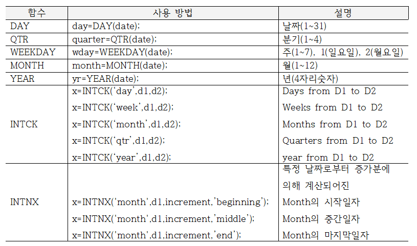
INTCK 함수는 첫 번째 시점부터 두 번째 시점까지 걸쳐진 일(day), 주(week), 월(month), 분기(quater), 연(year) 계산을 수행한다. 예를 들어, INTCK(‘year,’‘31dec89’d,’1jan90’d)의 경우 1989년 12월 31일에서 1990년 1월 1일까지 걸쳐진 연도 차이값을 생성한다. 즉, 1989년과 1990년과의 차이값인 ‘1’을 반환해준다. INTCK(’month,’‘31dec89’d,’1mar90’d)의 경우 12월과 다음 해 3월과의 차이이기 때문에 ‘3’의 값을 반환한다. INTNX는 특정 날짜로부터 증가분에 의해 계산되어진 달(또는 일, 년)의 시작(beginning), 중간(middle), 마지막 일자(end)를 계산해준다. 예를 들어 INTNX(’month,’‘23oct01’d,5,’beginning’)의 경우 2001년 10월 23일에서 5개월(‘month’로 지정했기 때문에) 후의 처음 시작 일자를 생성한다. 즉, 2001년 10월 23일에서 5개월 이후는 2002년 3월이며, ‘beginning’ 옵션을 줬기 때문에 2002년 3월 1일을 반환한다.
BB.T20 데이터셋에서 요양개시일자(MDCARE_STRT_DT)와 입내원일수(VSHSP_DD_CNT) 변수를 남기고(10개의 개체만 남김) 요양개시일자(MDCARE_STRT_DT)를 이용해 날짜 변수(DATE)를 생성하자. 그리고 요양개시일자(MDCARE_STRT_DT)와 입내원일수(VSHSP_DD_CNT)를 더하여 요양종료일자(END_DATE)를 생성해보자. 그리고 INTCK 함수를 이용하여 다시 입내원일수(VISIT) 변수를 생성하고 BB.T20_DATE2 데이터셋에 저장해보자. 프로그램은 다음과 같다.
data bb.t20_date2;
set bb.t20 (obs=10 keep=mdcare_strt_dt vshsp_dd_cnt);
date = input(mdcare_strt_dt,yymmdd8.);
end_date=date+vshsp_dd_cnt;
visit=intck('day',date,end_date);
run;
proc print data=bb.t20_date2;
format date mmddyy10. end_date mmddyy10.;
run;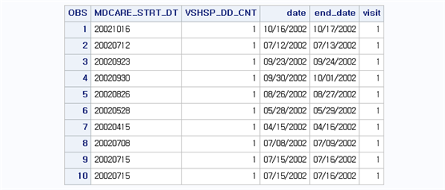
4.7 누적값을 이용한 새로운 변수 만들기
일반적으로 SAS DATA step에서 새로운 변수를 생성할 때는 [새 변수명 = 산출식;]과 같은 형태로 작성해야 하나 누적값을 구하는 변수 생성은 이와 달리 다음과 같은 방법으로 생성한다.
누적값 변수 + 기존 변수;즉, 변수 생성 시에 사용되는 “=” 부호 없이 새로운 변수를 생성한다. BB.T30 데이터셋에서 금액(AMT) 변수만 남겨서(10개의 개체만 남김) 금액의 누적값(CCOST)을 생성하고 BB.T30_CUMUL 데이터셋에 저장해보자. 프로그램은 다음과 같다.
data bb.t30_cumul;
set bb.t30 (obs=10 keep= amt);
ccost + amt;
run;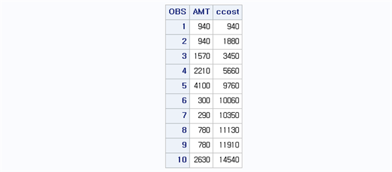
4.8 Lag과 Dif를 이용한 새로운 변수 만들기
LAG 함수는 관측값을 한 시점 뒤로 밀어주는 역할을 하며 DIF는 이전 시점 관측값과의 차이값을 계산한다. 사용법은 다음과 같다.
새로운 변수명 = LAGn(기존 변수);
새로운 변수명 =DIFn(기존 변수);여기서 n은 숫자값으로 지정하며 계산 단위의 크기를 지정한다. 예를 들어 LAG1의 경우 한 시점 뒤로 밀어주며 LAG2의 경우 두 시점 뒤로 밀어준다. 마찬가지로 DIF1의 경우 한 시점 이전과의 차이값을 만들어주며, DIF2의 경우 두 시점 이전과의 차이값을 만들어준다. 이때 한 시점을 결정하는 1은 쓰지 않아도 무방하다. 즉, LAG(기존 변수) 또는 DIF(기존 변수)는 한 시점 이전과의 연산 결과를 보여준다.
위에서 생성한 BB.T30_CUMUL 데이터셋을 이용하여 LAG과 DIF 함수를 이용하여 새로운 변수를 생성시켜보자. 이때 CCOST 변수를 한 시점 뒤로 이동한 변수를 LAGCOST로 두고, 다시 CCOST 변수를 이용하여 한 시점 이전과의 차이를 DIFCOST로 두자. 또한 CCOST와 LAGCOST와의 차이값을 DIFCOST2로 생성하고 BB.T30_CUMUL2로 저장하자. 여기서 DIFCOST2 변수는 CCOST와 CCOST를 한 시점 뒤로 미룬 LAGCOST와의 차이이기 때문에 결론적으로 DIFCOST와 같아져야 한다. 이를 위한 프로그램은 다음과 같다.
data bb.t30_cumul2;
set bb.t30_cumul;
lagcost=lag(ccost);
difcost=dif(ccost);
difcost2=ccost-lagcost;
run;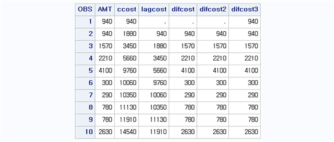
결과를 살펴보면 LAGCOST는 CCOST 값을 한 시점씩 뒤로 이동시킨 형태를 보여준다. 첫 번째 관측값을 뒤로 밀었기 때문에 LAGCOST의 첫 번째 값은 결측값으로 나타나며, 제일 마지막 값은 밀려서 삭제 된 형태로 나타난다. DIFCOST 또한 한 시점 이전의 값과의 차이를 나타내기 때문에 첫 번째 행은 결측으로 나타난다. 여기서 DIFCOST는 AMT를 누적시킨 CCOST 변수를 이용하여 한 시점 이전과의 차이값을 만들었기 때문에 결과 값이 AMT와 같다는 것을 알 수 있다. 또한 DIFCOST2는 CCOST와 LAGCOST의 차이값이기 때문에 역시 DIFCOST 또는 AMT와 같아짐을 알 수 있다. DIFCOST2의 첫 번째 행은 CCOST의 4580에서 LAGCOST의 ‘.’(결측값)을 뺀 형태이기 때문에 결과가 결측값으로 나타난다. 만약 여기서 DIFCOST2의 첫 번째 값을 결측이 아닌 CCOST의 첫 번째 값으로 나타내길 원하면 [DIFCOST2 = SUM(CCOST, -LAGCOST0);]와 같은 형태로 작성하면 된다.